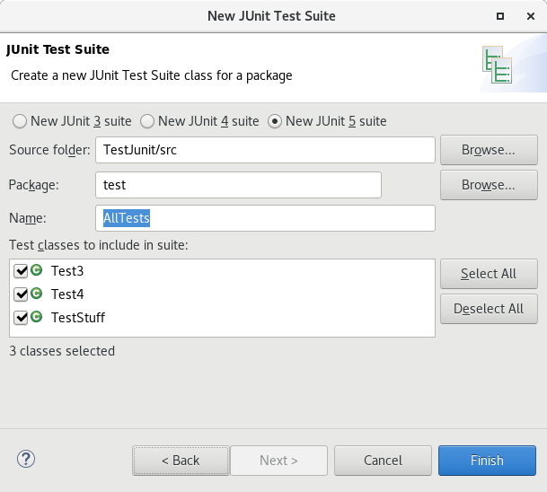
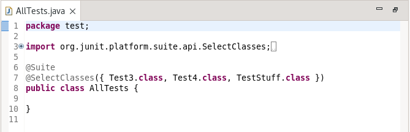
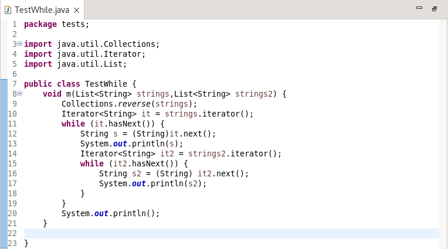
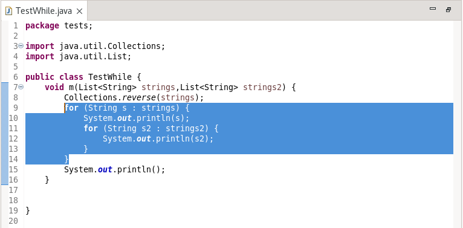
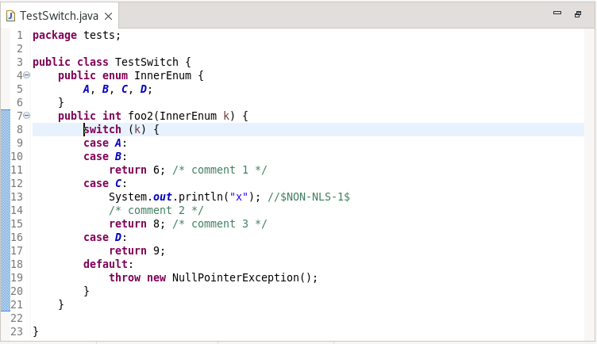
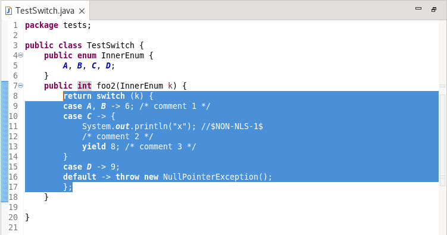

JUnit
The following shows what the wizard now looks like:

The result of this is:

Java Editor
To apply the cleanup, select the Java 5 Convert to enhanced 'for' loops checkbox on the Java Feature tab in your cleanup profile.
With the cleanup, the following:

Is changed to:

The secondary option: Only if loop variable used applies as normal with loops that do not access the loop variable being ignored.
To apply the cleanup, select the Java 14 Convert to switch expression where possible checkbox on the Java Feature tab in your cleanup profile.
With the cleanup, the following:

is changed to:

Debug